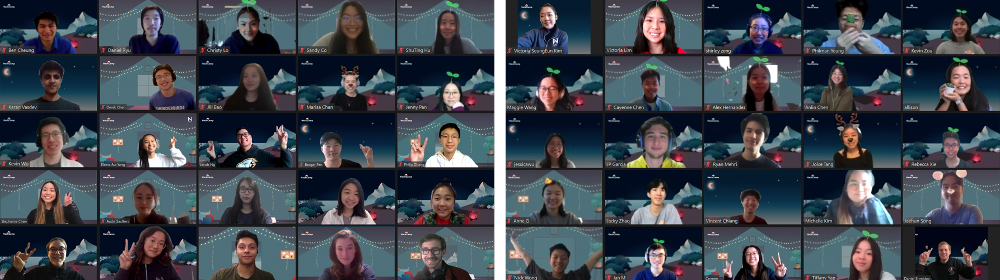

The ‘Involution’ of Hackathons
A late night breakthrough on our PennApps XX Project
“Quick, quick, Caden! Wake up — the drone is flying!”
Half of our team had been sleeping for the past hour and a bit. Acceptable, considering the time was now 2:42 am. The drone was whirring midair in our little room, nearly getting snagged on our laptops, chargers, and free event swag. Beside us, a blackboard wall displayed a rough chalk diagram of our technical architecture. We had roughly 20 hours left in the hackathon and now that the drone worked, our biggest roadblock was out of the way — it was time to build! We grabbed a plate of cold noodles from the meal line and ran past the crowd of people doing cup stacking competitions, karaoke, and Smash tournaments.
There is something truly special about being able to manifest an idea into reality, that’s what pulled me into hackathons in the first place. Anytime I went to a hackathon not knowing anyone, I left with a new group of friends and mentors and a handful of new skills. I’ve learned a sizeable amount of my technical knowledge through workshops and hackathon projects. These events inspired me to be intellectually curious. To this day, they’re the main reason why I still to this day spend hours tinkering on projects and exploring new ideas.
In comparison, something feels different about the vast majority of hackathons held today. Recent hackathons may have all the bells and whistles of earlier events, featuring elaborate meal plans and free bubble tea, but it feels performative at best. When asking most people about why they want to go to a hackathon, most people will mention something about the prizes, the recruiting, or the free t-shirts with company logos plastered over them. There is an unavoidable corporate air to the events.
However, this transition goes much further back than just the past few years. The origin of the more ‘modern,’ corporate hackathons arose out of corporate spaces like Facebook, which coopted design spaces like hackathons to further their hiring pipelines or to maintain their outward appearance being ‘cool’ to work for.1
This corporate co-optation of hacker culture at hackathons has been on the back of my mind ever since reading the chapter on design sites in Design Justice by Sasha Costanza-Chock. As someone who first got their footing in computer science through hackathons, it pains me to see that this is the rep that hackathons have slowly gotten over time, moving from safe spaces for idea exploration to increasingly corporate, competitive events where hackers spin up apps to test company products in exchange for the slim chance of winning prizes and recognition.
How did we get here?
Hacker Culture
The hacker subculture formed mainly out of the collaborative (and often competitive) DIY ethic of the counterculture of the 1960s. This was the generation of the ’Hackers,’ those interested in figuring things out as they go and invented for the pure ecstasy of building and learning new things. As Steven Levy defines it, ‘hacks’ were projects undertaken by these hackers not to fulfill any sort of end goal other than to take pleasure from working on it.2
The congregation of hackers eventually led to the creation of alternative design and hackerspaces like hackathons. These very first hackathons were gatherings of excited groups of people ready to build something cool over the weekend.
These spaces were described as originally being “third spaces” outside of the influence of the state and the capitalist market.3 Yet, without intentional intervention, it is difficult for these design spaces to even uphold their claim as spaces for intellectual exploration for all, as they become dominated mostly by the privileged to expend free time and income, and overrun by corporations clamouring to sponsor hackathons in order to get as much cheap testing on their products as possible, shoving discount code after free credits at each hacker.
These design sites used to be valorized as places of learning, making, and building. Why then, have they become increasingly corporate places of extraction of free labour?
Incentive Structure of Hackathons
Stacks of hackathon stickers ready for hackers’ laptops
It takes money to run events. Providing an adequate venue, food, internet, and power are not free resources. Yet, with the exception of a few corporate hackathons, the majority of hackathons remain free for attendees. To accomplish this, most hackathon organizers decide to try to acquire monetary sponsorships, food partnerships, and in-kind sponsorships in order to offset costs.
As a result a viscious cycle of incentives forms:
- Sponsors try to maximize the benefits they get for their money (e.g. hosting workshops, hiring booths, keynote speakers, company branding)
- With more money, hackathon organizers increase the size and scope of the event, leading to more hackers
- Hackers see sponsors as increasingly quintessential to the hackathon experience, being a key reason why hackers attend the events (sponsor prizes, free merch, hiring opportunities, etc.)
- Repeat
This leads to some key downstream effects on hackathon culture.
Prize Incentives
“People are now prioritizing their projects for the dollar value of prizes and the clout of awards. There is a trend where more and more attendees no longer come in to learn and make memories. Teams are now arriving to hackathons fully formed, with an idea in hand, and a checklist of the prizes they want to win.” — Jonathon Xu
Increasingly so, hackathons have placed more emphasis on prizes rather than building. They prominently display the total value of prizes available to entice hackers to attend, tout the available prizes again at opening ceremonies, and repeatedly blast announcements on them during hacking hours. Even DevPost, the ‘homepage’ for hackathons, organizes hackathons by how much there is to reap. Then again, who wouldn’t want a free iPad and tens of thousands in cash prizes and online subscriptions?
DevPost Top Hackathon categories by prize pool
Unfortunately, this incentive structure attracts people to hackathons for the wrong reasons. Individuals are motivated to tick boxes on a judging rubric rather than to learn and build new skills on a solid foundation; people who are there to learn are pushed to try and compete for prizes instead. Beginners, who may have wanted to just learn how to build a website, are instead cajoled into unsustainably trying to learn how to build something completely out of their skill range, becoming frustrated and losing sleep in the process. This is not to say that pushing hackers outside of their comfort range is a bad thing, but there is a limit to how much useful knowledge is retained after patching together APIs and blindly copying tutorials.
These incentive structures push hackers to tailor projects specifically for prizes to see just how many sponsor prizes they can shotgun for. In most of these cases, hackers don’t dare build outside of their comfort zone, instead choosing to work with technology they are already familiar with or project ideas they know have been successful in the past (don’t say you haven’t seen a gamifying volunteering or smart garbage bin hack before).
Short Term Optimization
“A one day hack for homelessness takes away from the complexity of social justice issues… you can’t just come up with an app that solve the world’s problems” — Design Justice3
Most hackathon projects are unsustainable and are unlikely to be used or continued to be worked on outside of the hackathon. A lot of this practice arises out of the Silicon Valley saviorism problem and ”move fast and break things” attitude. 4
The problem with this approach is that it becomes incredibly reductionist. Hacks rarely build on existing knowledge and work in the field and often ignore important context about the issues they so readily reduce to a single web app. Ever seen an app claiming to solve the fentanyl crisis or healthcare for the elderly? People think hackathons can do things that they usually can’t, such as solve global problems, create new products overnight, or ‘level the playing field’ of innovation through meritocracy.3
Hackathons, as they stand today, seem to optimize for short term excitement, and not so much for long term benefit. But this short-term burst of new products and ideas is exactly what corporations need to fuel their endless hunger for products, testing, and new talent.
Corporate Cooptation
Cupstacking, a commonplace hackathon activity
Companies realized that the attendees of these design spaces would readily give up their free time to build potentially marketable products. If hackers so readily built things in their own time, why couldn’t we co opt these for the company? Hackers provided a source of interesting ideas that could be milked, and, as a result, the creative outputs of these hackerspaces were “suddenly highly acclaimed, applied, and copy-pasted into capitalist developing laboratories.”5
The free market has warped the hacker ethos and hackerspaces into something almost unrecognizable from what it was supposed to stand for. This set of values which may have worked well for small startups or individuals just doesn’t scale well for an entire industry. Sharon Zukin and Max Papadantonakis in their work Hackathons as Co-optation Ritual describe three quasi-Orwellian principles that describe this new hacker culture: Work is Play, Exhaustion is Effervescent, and Precarity is Opportunity.1
Work is Play
“Forget about work-life balance. It’s all about work-life integration. Why else would the office have on-site acupuncture, nap pods, and free dinner after 7 pm?” — Arielle Pardes, WIRED
The initial hacker ethos of wanting to ‘innovate’ was evident in how vehemently startups disowned the 9-to-5 cubicle life. Walk into any tech company office building and you’d barely be able to tell if it was supposed to be a corporate office or adult playground with all the ping pong tables and colourful decor. The expectation was for employees to treat coworkers as family, office as home, and work as play.
But this playful front is not exactly as it seems. A 2017 study by Sage Business Researcher found that employees who work in offices with these benefits tend to stay in the office longer after work, pushing individuals to spend more and more of their lives in the office. Corporations frame events like hackathons as fun events to attend in an effort to appeal to the hacker ethos and to maintain their public image of ‘coolness’. Disguised under the nerf gun fights, ping pong tables, and free food is a more sinister intent to treat work as play. Is it wrong to love what you do and treat it as play? No, but corporations shouldn’t conflate the hacker ethos with a willingness to ‘play’ at work.
Exhaustion is Effervescent
“There are way easier places to work, but nobody ever changed the world on 40 hours a week” — Elon Musk
100 hour work weeks and ‘hustle culture’ are becoming increasingly normalized by tech moguls like Elon Musk. Being constantly tired is somewhat of a status icon as individuals boast about how little sleep they got.
It has been disturbingly normalized and even celebrated that exhaustion is a sign of strength. Among a global sleep-loss pandemic, events like hackathons which push for attendees to stay up for lengths of 24 to 36 hours are particularly worrisome.
I am viscerally reminded of sharing a hard gym floor with dozens of other sleep-deprived hackers, taking shifts to sleep so some people can stay up to work on the hack. Despite the timeboxed nature of hackathons, there is no reason purposefully staying up all night should be quintessential to the hackathon experience.
Physical and mental health should not be “instrumentalized in service of being useful to a startup mission, or even a life philosophy.”4 These events set the precedence of what the next generation of engineers, builders, and designers consider as ‘normal’ for the industry. Why are we saying that it’s okay to prioritize ‘success’ above personal wellbeing?
Precarity is Opportunity
The startup and hustle culture heavily idolizes those who live precarious lifestyles. High risk, high reward. The industry has normalized high turnover rates and job-hopping, with companies like Google and Amazon reporting median tenures of around a year, compared to the national average of 4.1 years.6
Today, the majority of tech employment consists of internships, contract work, short tenures at medium to large companies, and precarious work at startups. Because of the incredulous demand for tech jobs, candidates have considerably more leverage than employers do in offer negotiations, with individuals often using competing offers between companies to renege better signing bonuses and compensation.
While not precarious in the traditional labour sense, the employment itself is unstable and temporary. The concept of a ‘life-long job’ just doesn’t exist in this industry. As a result, individuals are constantly asked to market themselves for continually shifting jobs.
Similarly, these coopted design spaces reshape precarious and unpaid work from exploitative to opportunity. Writing code and building apps for free becomes something to be clamoured and competed over. In other words, “institutions use the allure of hackathons, with sponsors, prizes, snacks, and potential for career advancement, to get people to work for free.”7
Reclaiming Design Spaces
Liminal spaces: The morning after nwHacks 2020
Maybe this is the death of the hackathon as we know it, and that might not necessarily be a bad thing. Maybe we can throw away the focus on prizes, winning, and short-term projects and replace it with something better.
Sustainable Learning
The word hackathon is the portmanteau of hacking marathon. Why then, do we treat it like a sprint?
The ‘finish a complete project in two days’ mindset of hackathons rarely transfers well into the real world. Realistically, most projects are complex in scope and attempting to reduce complex problems down to a one-weekend hack omits a lot of context and nuance that is often important.
Work done at hackathons should be toward long-term sustainable processes instead of short term precarious work. During the past year, there has been a noticeable uptick in design spaces intended to facilitate longer term work like coliving houses, incubators, and fellowships. Hacker houses like Edyfi and School 2.0 give individuals the option to work on existing projects or scale new ones in a supportive community. A few organizations like the Cal Hacks Foundation are pioneering initiatives in this space with programs like the Cal Hacks Fellowship (a semester-long idea accelerator that invites teams to build beyond their side-projects) and Hack Month (which is a month-long build-a-thon focused on recentering the fun of building). MLH is also working on non-hackathon initiatives like the MLH Fellowship and the Local Hack Day workshops that refocus learning and maintenance rather than just blind creation. I’ve even noticed more individuals starting larger-scale personal projects and independent research that happen on the order of weeks to months rather than single days.
Encouraging the growth of more sustainable skill building enables individuals to take into account a more holistic view of problems. Hopefully, this leads to building longer term, larger scope, and bigger impact projects and skills.
Places of play
A majority of communities focused around building (e.g YCombinator or OnDeck) are ultimately not places of play – they have external outcomes they’d like to achieve.
We should create dedicated spaces for exploration and learning without needing to justify it via some specific outcome. This is not to say that spaces with those goals in mind are bad, but giving individuals the option to have a space for unfettered exploration can give them the freedom to explore ideas that may not have clear monetary value in the short term. Communities like Hack Club and Reboot do this particularly well. There is no central ‘goal’ of trying to launch a product or anything, but rather it’s a group of individuals that are intellectually curious and want to learn and build cool things.
The goal is to provide the infrastructure so that everyone can play, not just those privileged enough to throw spare income and time at it. Hackathon organizers shouldn’t assume that everyone is able and willing to stay up the entire event and barely set aside enough time for meals. It is important to consider food, bio breaks, accessible bathrooms that are friendly to all body types and genders, comfortable spaces to nap or relax, and decent lighting, etc.3
Moving Forward
A project demo at nwHacks 2020
If well-organized, hackathons can provide a fertile ground for pathways to employment as well as being a place of exploration. Those identities don’t need to be mutually exclusive. My argument here is that hackathons have recently placed too much emphasis on the pathways to employment; the main focus of design spaces like hackathons should be on hackers, not sponsors. Even for lower-income students, the ‘employment’ opportunities are usually short-term and precarious. Of course, sponsorship and money does have a role in making these hackathons possible, but not to the scale we’ve come to expect at these events.
The Future of Hackathons
What might the future of the hackathon look like, if not what it is now?
- Emphasis on sustainable learning. Realistically, hackers will not learn if all they did was copy tutorials off the internet. Most learning happens through sharing between individuals and teams. Hopefully, we can bake this into the hackathon structure by creating cohorts of hackers for parallel play and refocus the hackathon as a means to learn and explore for the sake of learning and exploring rather than to hit the checkboxes on a rubric.
- Realistic Scoping. Too many of today’s hackathons boast that they focus on creating ‘hacks for social good.’ The reality of the situation is that these complex and nuanced societal problems cannot be solved overnight with a simple web app. Either we stop advertising hackathons for good on the timescale of a single weekend, or we increase the timescale of the hackathon from a weekend to months or even years.
- Deprioritization of prizes and winning. Instead, we should provide a space for hackers to play and explore ideas. Obviously in an ideal world, both can happen at the same time, but the rubric-based approach that most hackathons take make these almost mutually exclusive. For now, let’s incentivize participation, completion, and novelty over prizes, competition, and winning.
- Hacker-focused spending. Money spent on often unsustainable swag could be much better spent in favour of more emphasis on higher quality venues, food, and accommodations. In doing so, we can work on raising enough money to run a successful event for the hackers rather than a sponsor’s notion of a successful event. At the end of the day, money is power. If you have external funding coming in, the expectation is that they have partial influence over the event. Let’s make sure that we draw the line where appropriate with sponsors so that the focus remains on the hacker.
A Promising Pilot
The sudden switch to virtual events due to COVID-19 may actually have been the catalyst to the potential future of hackathons. Virtual hackathons this year have shown how successfully we can run events on low budgets that are often 1/10th of our regular running budget. This means we were able to shave off swag, venue, transportation, and food costs to just a tiny fraction of what they used to be. This taste of what hacker-centric hackathons could be like was incredibly exciting to see, almost a glimpse into what the future of hackathons could look like.
After HackCamp 2020
This year, I was responsible for leading logistics at our beginner-focused hackathon called HackCamp. To recenter hackathons around learning and to rebuild a healthier hacker culture, we decided to restructure our event into a virtual conference weekend. Here are a few things we changed:
- We separated learning and workshops from building and hacking and turned it into a two-day hackathon. This allowed hackers to attend workshops and learn without fear of missing out on precious hacking time and to have scheduled sleeping time between the Learn and Build days.
- We replaced our ‘top’ hackathon project awards with a $25 donation to charity for every project submitted. In the past, we’ve had feedback from hackers saying how this gave them the confidence to finish a project rather than to fail and give up working on the ‘perfect’ or ‘winning’ project.
- All events were live streamed. This meant that hackers could do the event on their own time and rewatch important events like opening ceremonies while still providing a ‘live’ viewing experience for those who are available.
- We changed judging to be focused on feedback rather than on evaluation. To do so, we replaced exposition judges (who were normally volunteers or company sponsors) with hackers and did peer-based judging. With this approach, each team averaged 7 pieces of feedback.
Although this is by no means a full overhaul of the traditional hackathon, we think this is a great pilot into what a more explorative hackathon could look like. We were able to reach over 500+ attendees, 3.2k+ live stream viewers, and over $1200 in donations to charities, and the feedback we got was absolutely stellar.
Takeaways
Having more of the tools to articulate and locate exactly why hackathons have felt increasingly corporate is the first step to reinstate hackathons as third spaces not as places of competition and exploitation, but as places of play and exploration. Hackathons have so much potential to be safe havens for people to find like-minded people away from school assignments or startup grinds or corporate products.
Let’s hack the hackathon. This time, with hackers first, not companies.
Special thanks to Anson, Joice, Ivan, Jasmine, and Jess for reading and helping edit earlier drafts :)